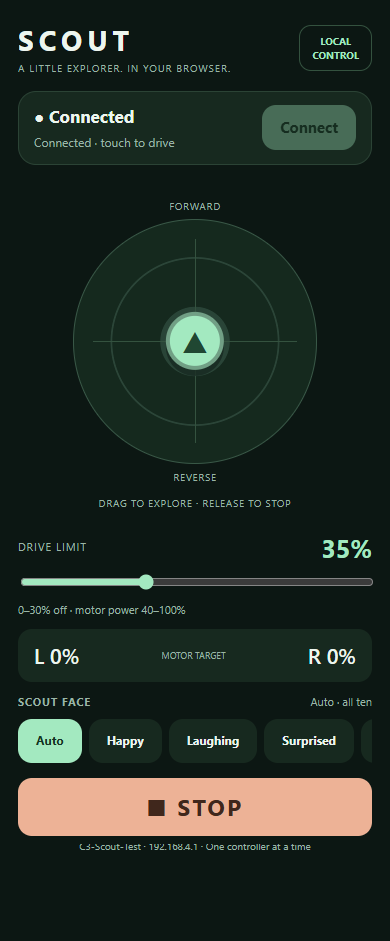
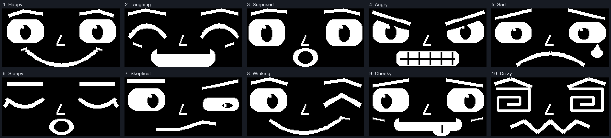

Current release · 19 October 2026
Drive from your browser
Scout carries its own web controller. Once the firmware is installed, a phone, tablet or computer can drive over Scout’s Wi-Fi without an app or an Internet connection.
SCOUT 2 · protocol 2 ScoutFaces 1.0.0
The current firmware combines the joystick, drive limit, Stop, saved motor directions and ten animated OLED expressions. The optional Android app is version 1.2.0 and uses the same robot firmware.
The ZIP includes editable firmware and browser sources, build helpers, firmware images, the optional Android APK and the full technical guide.

One-time setup
Install the current firmware
Open RUN before connecting the ESP32-C3’s USB cable. Keep RUN open while programming. Unplug ESP USB before closing RUN for driving.
- Download and unzip the current software package.
- In Arduino IDE, install the esp32 board package by Espressif Systems. The firmware uses Arduino ESP32 core 3.x. Select ESP32C3 Dev Module, enable USB CDC On Boot, and select your board’s USB port.
- Install WebSockets 2.7.2 by Markus Sattler / Links2004, Adafruit SSD1306 and Adafruit GFX Library, including their dependencies. Install the included ScoutFaces ZIP with Sketch → Include Library → Add .ZIP Library….
- Open
source/firmware/ScoutDrive/ScoutDrive.inofrom the extracted package. Keep its accompanying headers in the same folder, then compile and upload with RUN open. - After the upload finishes, disconnect ESP USB. Lift the wheels clear for the first direction check, then close RUN and follow the first-drive steps below.
A normal upload preserves Scout’s saved motor directions. A fresh or erased board defaults both reverse settings to OFF. The tested Scout uses Reverse left motor ON and Reverse right motor ON; check your own build with its wheels lifted.
Using the included build helpers, changing the browser source, or flashing individual binary images? Follow the full build and installation reference; local tool paths may need adjusting.
First drive
Connect, check direction, then drive
- With ESP USB disconnected, power Scout and join Wi-Fi C3-Scout-Test, password
ScoutTest42. Choose to stay connected if your device reports no Internet. - Open http://192.168.4.1/ and press Connect. This address is available while connected to Scout’s network. Reload this page after a firmware update.
- Start with the default 35% drive limit. Push the joystick up for forward, down for reverse and sideways to turn on the spot. Release it to send zero.
- If a wheel runs the wrong way, press Stop, expand Motor directions, change that wheel’s reverse setting and save. Reconnect for another wheels-lifted check.
- Press Stop to end the driving session. Press Connect deliberately when you are ready to drive again.
The limit describes requested motor power, not measured wheel speed. Logical commands at 30% or below are off; larger commands map to the useful 40–100% motor-power range. Full forward at the default 35% limit requests about 44% motor power.
Choose Auto to cycle all ten faces, or tap a name to keep one expression’s blinking and glancing animation. Swipe the face row for more choices. If the OLED is unavailable, driving remains available and the face controls are disabled.
Keep the controller tab visible and use one controller at a time. The browser sends commands every 100 ms, stops on missing replies after 800 ms, and the ESP expires browser driving after 1 second without a valid command. Motors may continue for up to one second after command loss. Android retains its 400 ms cutoff. Release and Stop act as soon as their commands arrive; reconnection never automatically resumes motion. Opening RUN cuts motor power independently.
Reverse steering is corrected in this release. The operator confirmed direction and reported improved driving after installation. Long-duration wireless stability and range have not been qualified. Stop the active controller before switching between browser and Android.
A library for your next OLED project
ScoutFaces 1.0.0
Ten animated expressions for a 128 × 64 monochrome OLED, packaged as an Arduino library with two complete examples.

Install and wire the display
- Download ScoutFaces-1.0.0.zip. In Arduino IDE choose Sketch → Include Library → Add .ZIP Library… and select it.
- Install Adafruit SSD1306 and Adafruit GFX Library with their dependencies through Library Manager.
- For Scout’s SSD1306 128 × 64 display, connect the four signals shown below. Check your module’s printed labels: pin order varies.
- Open File → Examples → ScoutFaces → AutoCycle or SelectExpression. Keep RUN open before connecting Scout USB and uploading an example.
| OLED signal | Scout connection |
|---|---|
| VCC | 3V3 |
| GND | GND |
| SDA | GPIO5 |
| SCL | GPIO7 |
Scout’s tested display address is 0x3C. AutoCycle also checks 0x3D; change the fixed address in SelectExpression if needed. The examples keep Scout’s GPIO6 motor-enable output LOW. Remove that Scout-specific assignment on another board if GPIO6 has a different purpose.
Tested with ESP32-C3, Arduino ESP32 3.3.12, Adafruit SSD1306 2.5.17 and GFX 1.12.6. The artwork uses 92,160 bytes of flash, so classic ATmega328P Uno/Nano boards cannot hold it. Other boards need sufficient flash, a compatible display framebuffer and an appropriate Wire pin setup; they have not been bench verified.
Example 1: cycle through all ten expressions
AutoCycle detects the display address, initializes the screen and runs the animation without an animation delay in the main loop. At the default timing, each expression lasts 5.76 seconds.
Show the complete AutoCycle sketch
#include <Wire.h>
#include <Adafruit_SSD1306.h>
#include <ScoutFaces.h>
constexpr int SDA_PIN = 5, SCL_PIN = 7; // Change for your board.
Adafruit_SSD1306 display(128, 64, &Wire, -1, 100000, 100000);
ScoutFaces faces(display);
void setup() {
Serial.begin(115200);
// Scout Carrier C v10 only: keep motor driver disabled during the demo.
// Omit this GPIO6 assignment on other boards if the pin has another use.
digitalWrite(6, LOW);
pinMode(6, OUTPUT);
delay(500);
if (!Wire.begin(SDA_PIN, SCL_PIN, 100000)) while (true) delay(1000);
Wire.setTimeOut(50);
uint8_t address = 0;
for (uint8_t candidate : {0x3C, 0x3D}) {
Wire.beginTransmission(candidate);
if (Wire.endTransmission() == 0) { address = candidate; break; }
}
if (!address) {
Serial.println("No OLED at 0x3C/0x3D. Check wiring and reset.");
while (true) delay(1000);
}
if (!display.begin(SSD1306_SWITCHCAPVCC, address, false, false) || !faces.begin()) {
Serial.println("Display initialization failed. Requires 128x64 landscape.");
while (true) delay(1000);
}
}
void loop() {
if (faces.update()) display.display();
// Other project work goes here; no animation delay() is required.
}
Example 2: choose an expression
SelectExpression starts with Cheeky. Its comments show the library calls for choosing Surprised or resuming automatic cycling. A selected expression still blinks and glances.
Show the complete SelectExpression sketch
#include <Wire.h>
#include <Adafruit_SSD1306.h>
#include <ScoutFaces.h>
Adafruit_SSD1306 display(128, 64, &Wire, -1, 100000, 100000);
ScoutFaces faces(display);
void setup() {
// Scout-specific motor disable. Remove on other boards as appropriate.
digitalWrite(6, LOW);
pinMode(6, OUTPUT);
Wire.begin(5, 7, 100000); // Set your board's SDA and SCL here.
// Change 0x3C to 0x3D if that is your display's address.
if (!display.begin(SSD1306_SWITCHCAPVCC, 0x3C, false, false) || !faces.begin())
while (true) delay(1000);
faces.setExpression(ScoutFaces::Expression::Cheeky);
}
void loop() {
if (faces.update()) display.display();
// In your own event handler you can select a different face:
// faces.setExpression(ScoutFaces::Expression::Surprised);
// Or resume all ten expressions: faces.setAutoCycle(true);
}
The library draws a changed pose when faces.update() returns true; your display driver then sends the framebuffer to the OLED. It owns the whole screen. Sending a frame takes bus time, so keep display updates outside any time-critical motor loop. Installing this library alone does not update Scout’s drive firmware.
Keep a local copy
Code downloads and reference
- Current web-control firmware and source ZIP19 October 2026 · SCOUT 2 / protocol 2 · includes editable projects and firmware images
- ScoutFaces 1.0.0 Arduino libraryTen expressions and both example sketches; install Adafruit dependencies separately
- Optional Android app 1.2.0Debug-signed APK; Android may ask you to allow installation from the app opening it
- Full technical control guideComplete source listings, build helpers, protocol, API and recorded verification
- Release file manifest · SHA-256 checksums